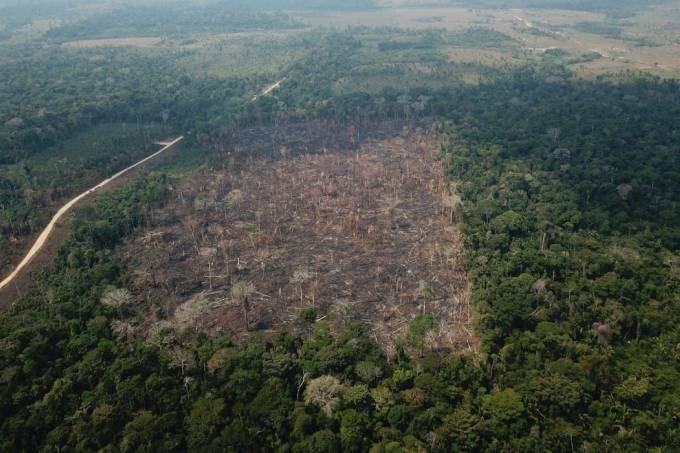

Brasil perde US$ 1,5 bi por ano com desmatamento da Amazônia, diz estudo
Estimativa é conservadora e leva em conta receitas que poderiam ser obtidas se áreas desmatadas fossem manejadas dentro da lei e de uma política sustentável

A revisão da política brasileira na Amazônia para um modelo que privilegie o manejo sustentável da floresta tem o potencial de gerar US$ 1,5 bilhão por ano em receitas, e mais US$ 220 milhões em Imposto sobre Circulação de Mercadorias e Serviços (ICMS) para os Estados amazônicos e de outras regiões. O número está em estudo publicado pela Chatham House, think thank sediado em Londres. O grupo de pesquisadores foi liderado pelo brasileiro Ricardo Miranda Leitão, mestre em políticas públicas pela Universidade de Oxford e fiscal da Secretaria da Fazenda do Pará. Também participaram do estudo Anum Farhan, Alison Hoare e Thiago Uehara, que são da equipe da própria Chatham House.